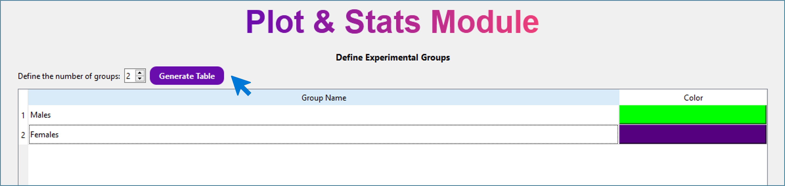
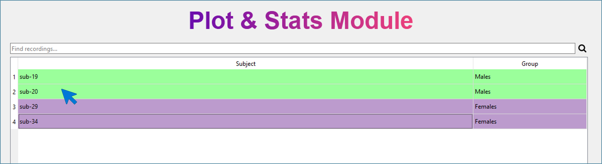
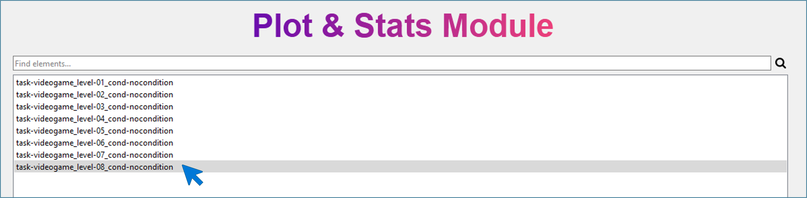
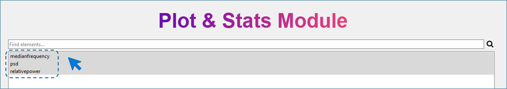
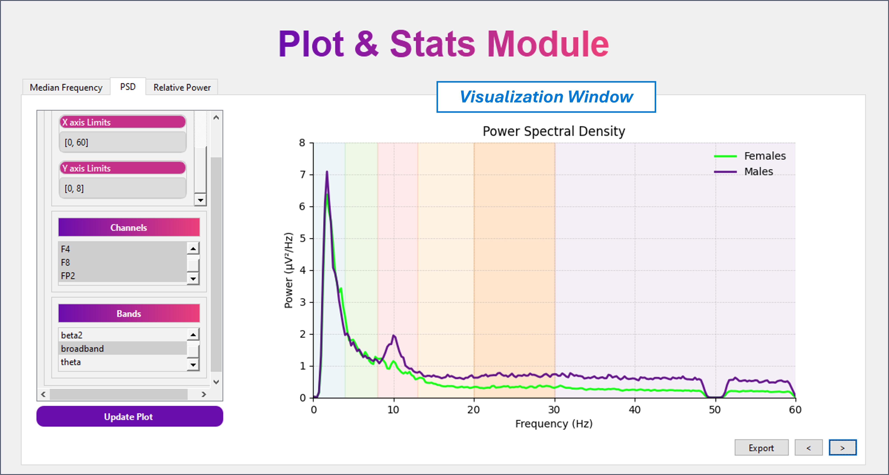
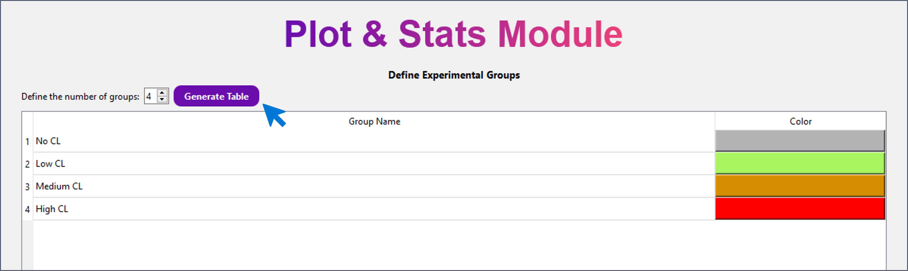
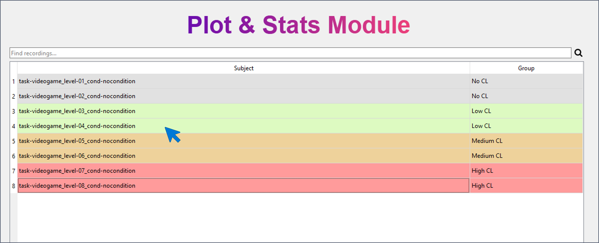
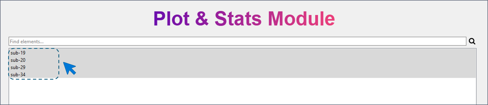
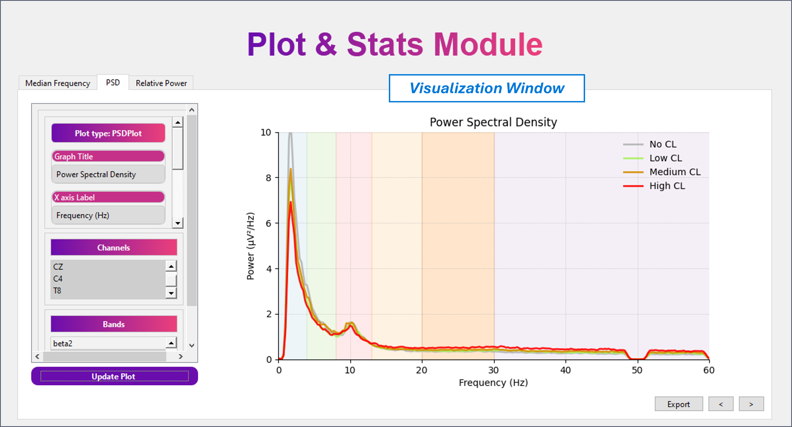
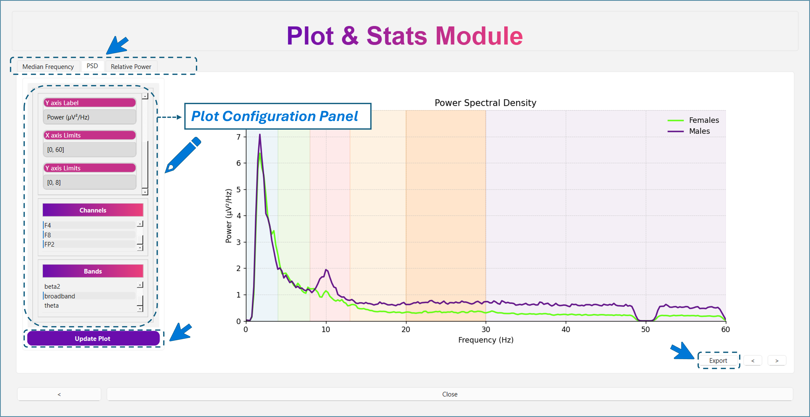

Plot Parameters¶
The Plot Parameters module allows users to visualize and compare the parameters previously computed with MEDUSA© Analyzer. This module supports two types of analyses:
- Within-subject analysis (paired)
- Between-subject analysis (unpaired)
A within-subject analysis compares the same participants across different conditions or sessions, whereas a between-subject analysis compares different groups of participants (e.g., males vs. females, control vs. Alzheimer’s disease, younger vs. older adults).
1. Loading Processed Data¶
The first window of this module asks for the path to the processed experiment directory.
Warning
The selected folder must come from MEDUSA© Analyzer, after finishing an experiment and saving results.
Your folder must contain:
data/
├── settings.json
└── derivatives/
└── parameters/
setttings.json = experiment configuration
- derivatives/parameters/ = all computed parameters files (.mat)
After the folfer is loaded, select one of the analysis (within-subject or between-subject)
and click Next button.
Between-Subject Analysis¶
This section explains how to configure a between-subjects comparison. To illustrate the workflow, we will use the example Males vs. Females, although you may create any groups (e.g., control vs. Alzheimer’s, normal aging vs. MCI, athletes vs. non-athletes, etc.).
Step 1 - Define Groups¶
In this window, you define:
- Number of groups
- Name of each group
- Color assigned to each group (used in all plots)
Procedure:
- Enter the number of groups (e.g., 2 for Males and Females).
- Click Generate Table.
- A table appears with default group names and colors.
- Modify group names to Males and Females.
- Click on the color cell to choose the color used in plots.

Tip
Choose colors that contrast well to improve figure readability. Colors assigned here will be used automatically across all visualizations.
Click Next.
Step 2 - Assign Subjects to Groups¶
The interface now displays the list of all available subjects. To assign subjects:
- Select one or multiple subjects.
- Right-click and choose one of the defined groups.

Click Next.
Warning
- If any group is left empty, the software will prevent advancing to the next step.
- A subject cannot belong to more than one group.
- Subjects may remain unassigned if not needed for comparison
Step 3 — Select Recordings¶
You now see all available recordings for the selected subjects. Here, you must choose the recording(s) to be averaged for each subject. If a subject has multiple recordings, you may select one or several. Selected recordings are averaged per subject before visualization. Across subjects, group averages are computed afterward.

Note
Even if recordings differ in length or number of segments, the Analyzer handles averaging internally.
Select the desired recordings and click Next.
Step 4 — Select Parameters to Analyze¶
The next window lists all parameters computed previously using MEDUSA© Analyzer. For this example, select:
- Median Frequency
- PSD
- Relative Power

Click Next to reach the visualization window.

Within-Subject Analysis¶
This mode compares different conditions within the same subjects. We will illustrate it using an example with different levels of cognitive load (CL):
- No CL
- Low CL
- Medium CL
- High CL
Step 1 — Define Conditions¶
As before, define:
- Number of groups (here: 4 conditions)
- Group names (the four CL levels)
- Colors (one per condition)
Procedure:
- Enter 4 groups.
- Click Generate Table.
- Rename groups to No CL, Low CL, Medium CL, High CL.
- Assign a color to each condition.

Click Next.
Step 2 - Assign Recordings to Conditions¶
You now see a list of all recordings in the experiment. Here, you must assign each recording to one condition.
- Select a recording (or several).
- Right-click and assign to a condition.

Warning
- A recording cannot belong to multiple conditions.
- Conditions cannot be empty.
- Unused recordings may remain unassigned.
Click Next after assigning recordings.
Step 3 - Select Subjects¶
You will now see all subjects that contain at least one recording assigned to a condition. Here, you must select the subjects to include.
- If multiple subjects are selected, the Analyzer averages across subjects within each condition.
- If only one subject is selected, plots correspond to that subject only.

For the example, select all subjects to analyze average group behavior.
Click Next.
Step 4 — Select Parameters¶
Select the parameters you want to analyze (e.g., PSD, relative power, median frequency).
Click Next to reach the visualization window.

Visualization Window (Common to Both Analyses)¶
The visualization interface is identical for within- and between-subjects.

Parameter Tabs¶
At the top-left, you will find one tab per selected parameter:
- Switching tabs changes the plot to the selected parameter.
- Only parameters supported by the module currently produce plots.
Note
At the moment, plots are available only for EEG spectral parameters.
Available visualizations:
- PSD → PSDPlot
- Relative Power → LinearPlot
- Absolute Power → LinearPlot
- Median Frequency → LinearPlot
- Spectral Entropy → LinearPlot
Plot Types¶
PSDPlot¶
Characteristics:
- Frequency range: 0–60 Hz (default)
- Power range: 0–10 μV²/Hz (default)
- Shaded frequency bands automatically displayed:
- Delta (0–4 Hz)
- Theta (4–8 Hz)
- Alpha (8–13 Hz)
- Beta (13–30 Hz)
- Gamma (>30 Hz)
These ranges can be modified in the Plot Configuration Panel.
LinearPlot¶
Characteristics:
- One point per group (condition or subject group)
- Points are connected forming a curve
- Optional dispersion (standard deviation) can be displayed
- Background is shaded according to group colors
- Curve color can be customized in the configuration panel
This plot is used for:
- Median frequency
- Relative/absolute power
- Spectral entropy
Plot Configuration Panel (Left Side)¶
This panel allows you to customize:
General settings¶
- Plot title
- X-axis label
- Y-axis label
- Curve color (LinearPlot)
- Frequency and power limits (PSDPlot)
- Show/hide dispersion (LinearPlot)
Channel selection¶
A list containing all signal channels.
- Supports multiple channel selection.
- If multiple channels are selected → automatic averaging across them.
- You can select:
- A single channel
- A subset of channels
- All channels
Band selection¶
Contains all frequency bands extracted during preprocessing.
- Only one band can be selected at a time.
- Changing the band updates the visualization for supported parameters.
Warning
Changes are not applied automatically.
You must click Update Plot to refresh the figure.
Exporting the Figure¶
At the bottom of the window, the Export button allows saving the current plot.
You may configure:
- Output format
- Image size
- DPI
- Background color
- Destination directory
- File name
Tip
For best-quality exports, use: 2800 × 2200 px Smaller images may cause slight overlap of labels or shaded zones.
Always inspect the exported figure before including it in reports or publications.